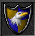
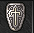
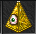
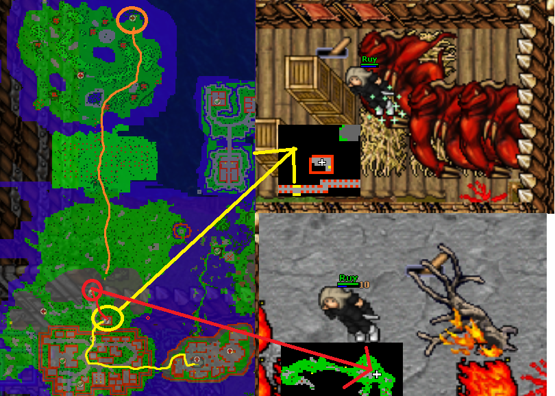
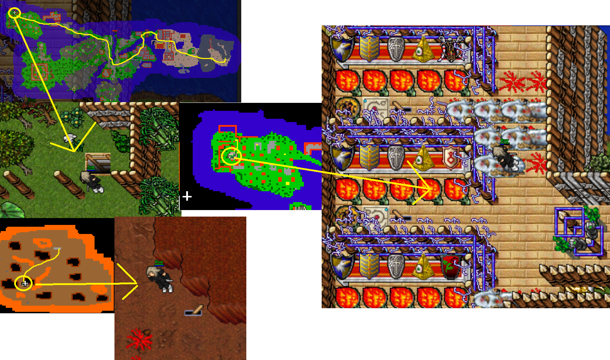

Upgrade Rose, Tusk or Honour shield to Cyclip shield
Recommended level: 1200; duo 900, trio 800
Requirements: Scythe/machete/rune of almighty abilities
Rose, Tusk or Honour shield
Eagle shield
 Blessed shield
Blessed shield
Tempest shield
Illuminati
The best way to come here is from Fallen gods checkpoint 1. Follow the path to the North-west where is Xapter protecting the lever to the deeper into Fallen gods. Go past the Xapter and go South on a narrow path. There will eventually come pitfall, head there.
At the next place, you need to pull 2 levers in order to continue. First is straight up from the stairs, go ladders up to the top. Other Lever is to the East stairs up with loads of Scyllas, some arctoses and helarctoses.
After pulling those 2 levers, head West and you’re at the plains area.

Now you need to pull 2 levers in order to continue. First one is hidden under 2 crates North-east of the city walls in a small building. There’s also a couple of orshabaals. The next one is at the mountain up North with surphyres and lots of Asthars. After pulling those, you can grab the checkpoint to the East, then head North and go ladders up.

Go past the draconises and Evil Limp and go down with hybrids. Go North-East past the Xapter, use scythe or other item to cut down the grass and go downstairs. There is no way back after this. Go full around the circle, at the end is Arm of Doom guarding the teleport. Go in and follow the path as far as you get to the desert. You’ll first go across a bridge and face the Donkey rider.
After getting out of the mountains you find yourself surrounded by different kinds of pharaohs. Head West past the city, stairs up and go over the bridge to the other side. Keep following the path to the North-West. You’ll find a single Cyclip god on your way to the quest area. Pull the lever in order to get upstairs with Donkey rider and lots of Angels of death. Here you can now upgrade your shields to Cyclip shield.
